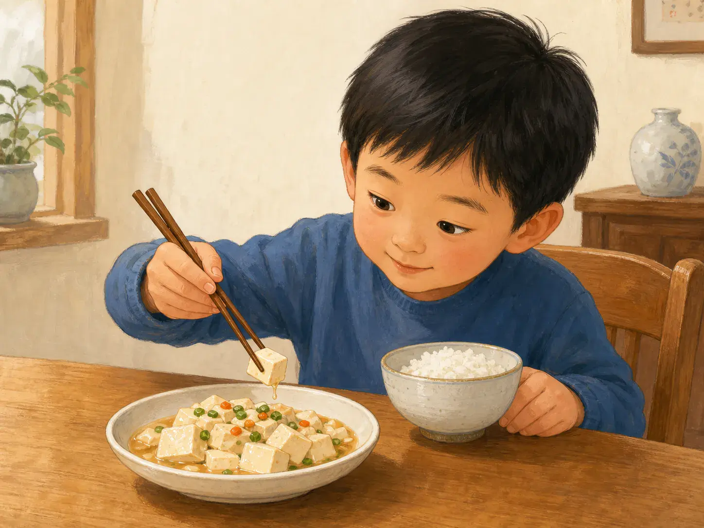
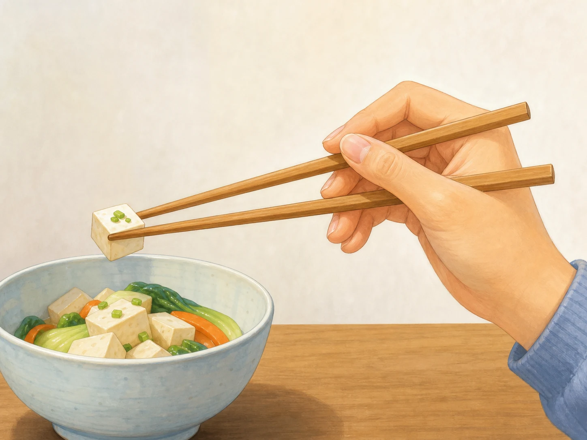
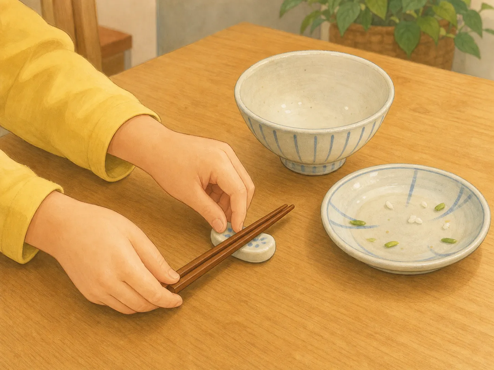

两根筷子，怎么夹得稳？
How Do Two Chopsticks Work Together?
Page 1
豆腐，还是花生？
Tofu—or a Peanut?

Tofu is soft and slippery, while a peanut likes to roll. Each one needs a different kind of pressure.
桌上放着一块嫩豆腐和一颗花生。你想先夹哪一个？
豆腐看起来比较大，可它又滑又软。夹得太松，它会溜走；夹得太紧，它就碎了。花生很硬，却会像一只小轮子一样滚来滚去。筷尖刚碰到它——咕噜！它又跑了。
原来，用kuàizi · 成对使用、用来夹取食物的细长餐具。不只是把食物“夹住”。手指还要知道什么时候轻一点，什么时候稳一点。第一次没成功也没关系。把逃跑的花生追回来，再试一次就好。
On the table sits a cube of soft tofu and one peanut. Which would you pick up first?
The tofu looks easier because it is bigger, but it is soft and slippery. Hold it too loosely and it slides away. Squeeze too hard and—squish!—it breaks. The peanut is firm, but it rolls like a tiny wheel. The tips touch it, and away it goes.
Using kuàizi · 筷子 · A pair of slender eating utensils used together to lift food. is not only about “grabbing” food. Your fingers must learn when to be gentle and when to be steady. If the first try does not work, chase down that runaway peanut and try again.
Page 2
一根不动，一根来动
One Stays Still. One Moves.

In one common grip, the lower chopstick stays steady while the fingers move the upper one.
很多人学筷子时，会先让下面那根筷子靠在手上，尽量不动。上面那根由拇指、食指和中指带着开开合合。两根筷尖碰在一起，食物就能被轻轻托住。
可以先试一块不会滚、也不容易碎的食物。等筷尖能够一次次对在一起，再挑战豆腐和花生。木筷或竹筷通常没有金属筷那么滑，也可能更适合刚开始练习的人。
图里只是一种常见握法，不是每只手都必须照着摆。有人用右手，有人用左手；手指长短也不同。舒服、安全，又不会碰到同桌的人，就是一个好开始。
Many beginners start by resting the lower chopstick against the hand and keeping it mostly still. The thumb, index finger, and middle finger move the upper chopstick. When the two tips meet, they can gently hold the food between them.
Begin with something that does not roll or break easily. Once the tips can meet again and again, try the tofu and peanut. Wooden or bamboo chopsticks are often less slippery than metal ones, which may make practice easier.
The picture shows one common grip, not a rule for every hand. Some people use the right hand and some use the left. Fingers come in different shapes and sizes too. A grip that is comfortable, safe, and does not bump your neighbor is a good place to start.
Page 3
吃完以后，筷子放哪里？
Where Do the Chopsticks Go?

A chopstick rest keeps the tips off the table. Homes and restaurants may have other ways to set chopsticks down.
中国人使用筷子已经很久了，可是没有人知道第一双筷子是谁做的。它也不是一下子就变成今天的样子。后来，筷子传到东亚许多地方，各地又做出了不同的长短、形状和材料。
在许多中国家庭里，筷子不用时可以平放在碗边或筷架上。不要把筷子直直插进饭里，因为这会让人想到祭祀时插着的香；也不要拿筷子指着别人，或者在一盘菜里翻来翻去。
不过，每个家庭的习惯不一定完全一样。最容易记住的礼貌其实很简单：看看主人怎样做，不确定时就问一问。两根小筷子，也要和整桌人好好相处。
People in China have used chopsticks for thousands of years, but no one knows who made the first pair. Chopsticks did not suddenly appear in their modern form. As they spread to other parts of East Asia, people made them in different lengths, shapes, and materials.
In many Chinese homes, chopsticks can rest across a bowl or on a small chopstick rest when they are not being used. People usually avoid standing them upright in rice because they can look like the thin incense sticks burned during a ceremony. Pointing at someone or digging around in a shared dish can also feel rude.
Every family may do things a little differently. The easiest rule is simple: watch what your hosts do, and ask if you are unsure. Even two little sticks need to get along with everyone at the table.
筷子不只用来吃饭
Chopsticks Do More Than Pick Up Food
在许多中国厨房里，人们还会用筷子把鸡蛋搅匀、拌调料、拨散面条，或者在锅里翻动小块食物。有些厨师会准备一双特别长的筷子，让手离热锅远一点。热锅旁的工作，当然要交给大人。
In many Chinese kitchens, people also use chopsticks to beat eggs, mix a sauce, stir noodles, or turn small pieces of food in a pan. Some cooks keep an extra-long pair so their hands can stay farther from the heat. Work near a hot pan, of course, is for a grown-up.